DEVOPS / CLOUD / CI-CD
Building reliable
deployment pipelines.
DevOps-focused portfolio showcasing hands-on work with AWS EC2, Docker, Jenkins, GitHub, Docker Hub, Bash scripting and application monitoring.
devops@ec2
$ git push origin dev
→ GitHub webhook triggered
$ docker build -t react-app .
✓ Build successful
$ docker push dev:latest
✓ Image pushed
$ curl http://localhost
✓ Application UP
01 / ABOUT
DevOps through practical projects.
I am building practical DevOps experience by working with cloud infrastructure, containerization, CI/CD automation, version control and monitoring. This portfolio highlights a production-style React deployment project from source code to a monitored application running on AWS EC2.
AWSCloud deployment
CI/CDJenkins automation
DockerContainerization
UptimeHealth monitoring
02 / SKILLS
Tools I work with.
03 / FEATURED PROJECT
Production-Ready React Deployment
AWS · DOCKER · JENKINS
Repository ↗
React Application CI/CD Platform
A complete DevOps workflow that builds, containerizes, publishes and deploys a React application. GitHub pushes trigger Jenkins, development images are pushed to Docker Hub, production images are separated into a private repository, and Uptime Kuma checks the live application's health.
01GitHubdev / main
02JenkinsCI/CD
03Docker Hubdev / prod
04AWS EC2Port 80
05Uptime KumaHealth check
Implementation
- Multi-stage Docker build with Node.js and Nginx.
- Docker Compose for repeatable deployment.
build.shanddeploy.shfor automation.- GitHub
devandmainbranch workflow. - Jenkins webhook-triggered builds.
- Docker Hub public dev and private prod repositories.
- AWS EC2 deployment with restricted SSH access.
- Uptime Kuma monitoring with Gmail SMTP notifications.
Outcome
✓
Automated build → push → deploy workflow for a containerized React application.
✓
Application exposed through HTTP port 80 and continuously health-checked.
Project Screenshots
Real implementation screenshots from the AWS, GitHub, Docker, deployment and monitoring stages of the project.
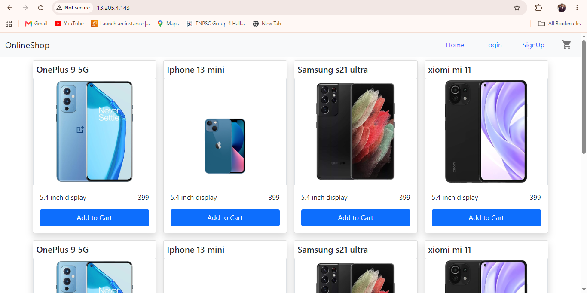
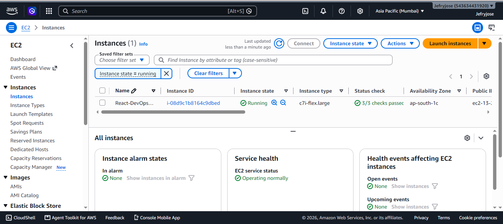
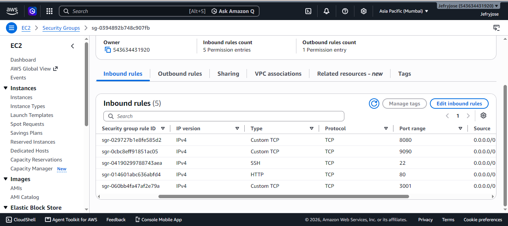
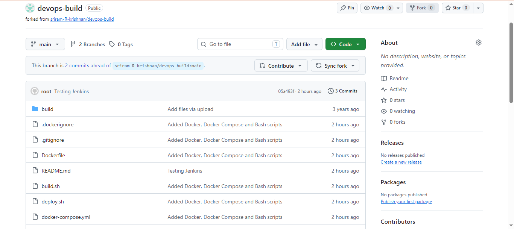
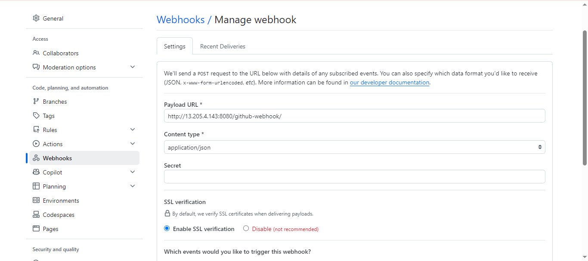
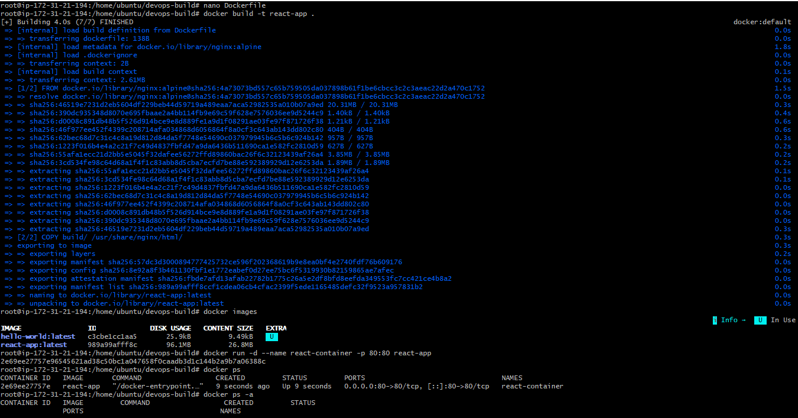
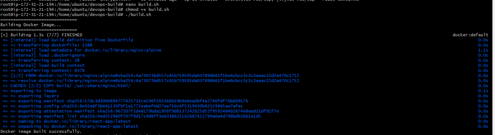
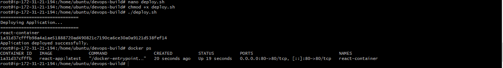
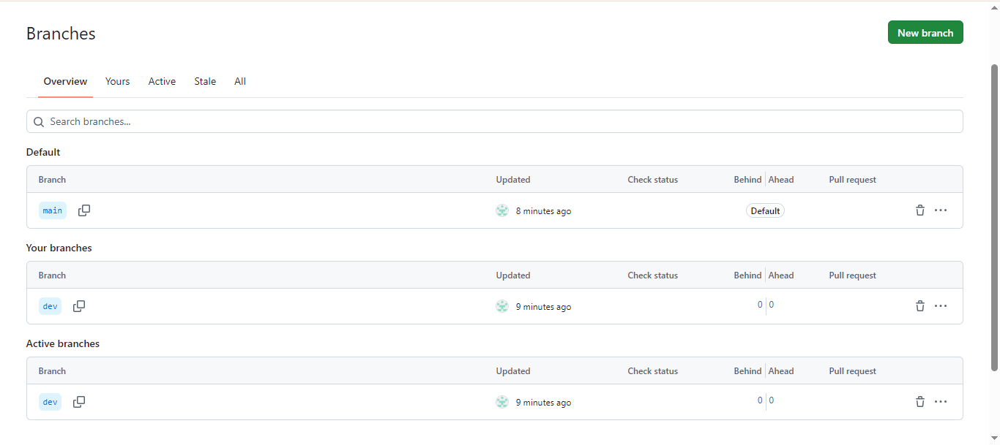
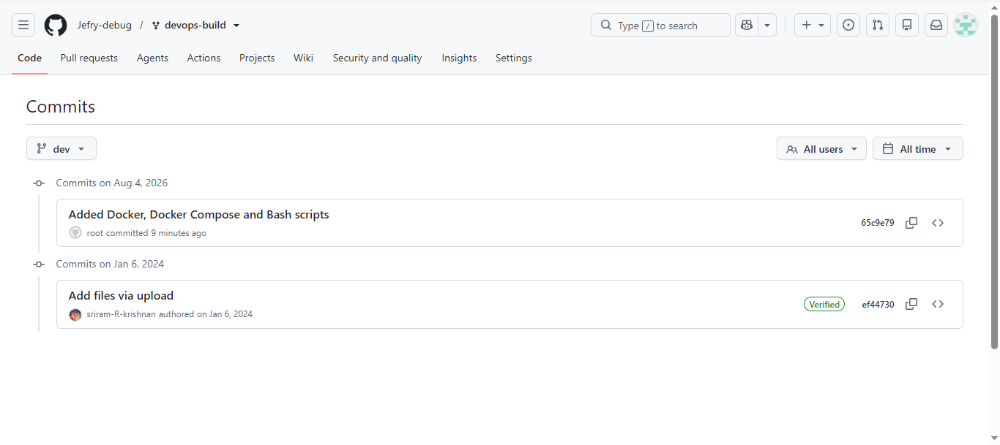
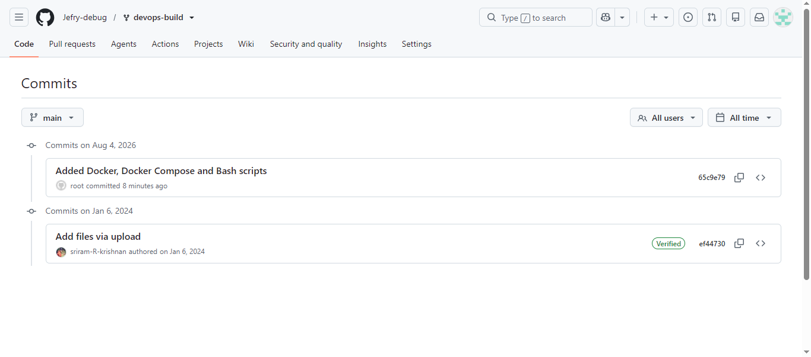
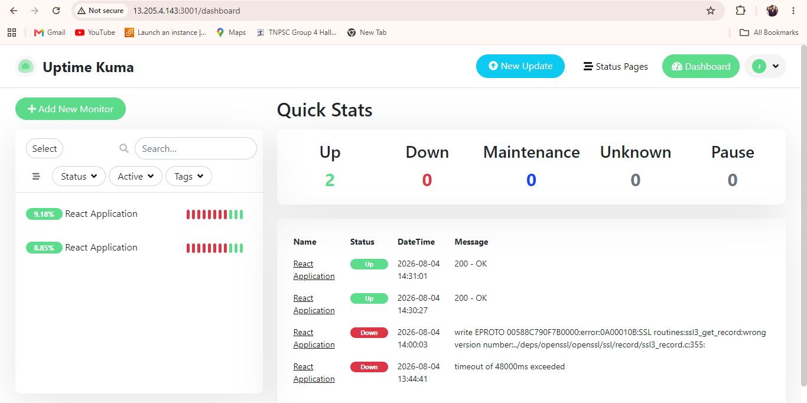
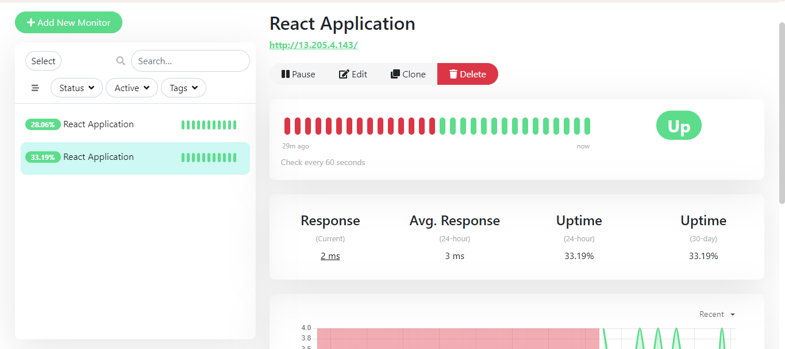
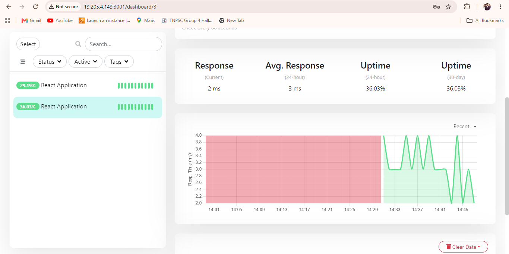
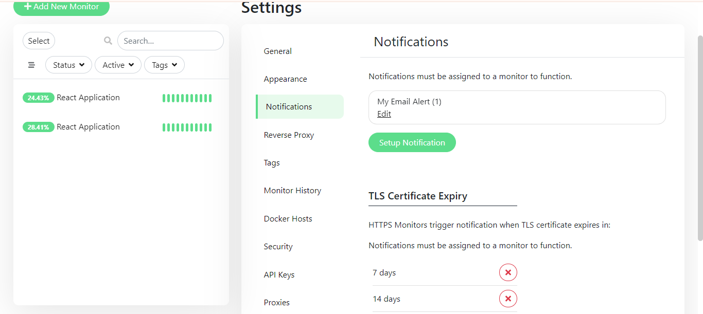
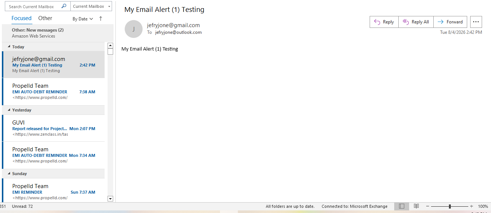
04 / CONTACT
Let's connect.
Open to DevOps, Cloud and junior infrastructure opportunities.